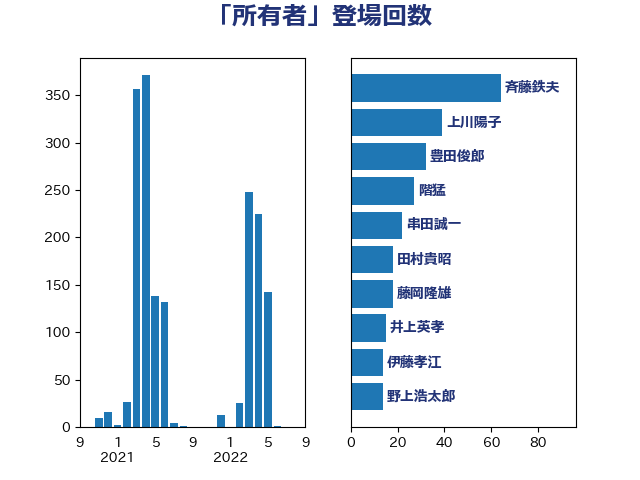

単語「所有者」

| 斉藤鉄夫 | 公明党 | 64 回 |
| 上川陽子 | 自由民主党 | 39 回 |
| 豊田俊郎 | 自由民主党 | 32 回 |
| 階猛 | 立憲民主党 | 27 回 |
| 串田誠一 | 日本維新の会 | 22 回 |
| 田村貴昭 | 日本共産党 | 18 回 |
| 藤岡隆雄 | 立憲民主党 | 18 回 |
| 井上英孝 | 日本維新の会 | 15 回 |
| 伊藤孝江 | 公明党 | 14 回 |
| 野上浩太郎 | 自由民主党 | 14 回 |
| 市村浩一郎 | 日本維新の会 | 13 回 |
| 紙智子 | 日本共産党 | 13 回 |
| 室井邦彦 | 日本維新の会 | 11 回 |
| 宮崎政久 | 自由民主党 | 10 回 |
| 山添拓 | 日本共産党 | 10 回 |
| 柴田巧 | 日本維新の会 | 10 回 |
| 清水貴之 | 日本維新の会 | 10 回 |
| 神津たけし | 立憲民主党 | 10 回 |
| 福島伸享 | 無所属 | 10 回 |
| 大塚耕平 | 国民民主党 | 9 回 |
| 赤羽一嘉 | 公明党 | 9 回 |
| 高橋千鶴子 | 日本共産党 | 9 回 |
| 中谷一馬 | 立憲民主党 | 8 回 |
| 宮崎雅夫 | 自由民主党 | 8 回 |
| 山下貴司 | 自由民主党 | 8 回 |
| 岸信夫 | 自由民主党 | 8 回 |
| 高木かおり | 日本維新の会 | 8 回 |
| 大口善徳 | 公明党 | 7 回 |
| 浜口誠 | 国民民主党 | 7 回 |
| 渡辺周 | 立憲民主党 | 7 回 |
| 田名部匡代 | 立憲民主党 | 7 回 |
| 古川元久 | 国民民主党 | 6 回 |
| 川合孝典 | 国民民主党 | 6 回 |
| 枝野幸男 | 立憲民主党 | 6 回 |
| 福田昭夫 | 立憲民主党 | 6 回 |
| 稲津久 | 公明党 | 6 回 |
| 野田国義 | 立憲民主党 | 6 回 |
| 高橋英明 | 日本維新の会 | 6 回 |
| たがや亮 | れいわ新選組 | 5 回 |
| 中山展宏 | 自由民主党 | 5 回 |
| 吉川沙織 | 立憲民主党 | 5 回 |
| 城井崇 | 立憲民主党 | 5 回 |
| 小宮山泰子 | 立憲民主党 | 5 回 |
| 小西洋之 | 立憲民主党 | 5 回 |
| 後藤祐一 | 立憲民主党 | 5 回 |
| 舟山康江 | 国民民主党 | 5 回 |
| 伊波洋一 | 無所属 | 4 回 |
| 宮下一郎 | 自由民主党 | 4 回 |
| 山口壯 | 自由民主党 | 4 回 |
| 岸真紀子 | 立憲民主党 | 4 回 |
| 朝日健太郎 | 自由民主党 | 4 回 |
| 末松信介 | 自由民主党 | 4 回 |
| 横沢高徳 | 立憲民主党 | 4 回 |
| 熊野正士 | 公明党 | 4 回 |
| 稲富修二 | 立憲民主党 | 4 回 |
| 野中厚 | 自由民主党 | 4 回 |
| 鈴木義弘 | 国民民主党 | 4 回 |
| 長浜博行 | 無所属 | 4 回 |
| 高野光二郎 | 自由民主党 | 4 回 |
| 古川禎久 | 自由民主党 | 3 回 |
| 小沢雅仁 | 立憲民主党 | 3 回 |
| 小泉進次郎 | 自由民主党 | 3 回 |
| 山谷えり子 | 自由民主党 | 3 回 |
| 津島淳 | 自由民主党 | 3 回 |
| 清水真人 | 自由民主党 | 3 回 |
| 田村智子 | 日本共産党 | 3 回 |
| 白石洋一 | 立憲民主党 | 3 回 |
| 石垣のりこ | 立憲民主党 | 3 回 |
| 石川博崇 | 公明党 | 3 回 |
| 西村康稔 | 自由民主党 | 3 回 |
| 谷田川元 | 立憲民主党 | 3 回 |
| 酒井庸行 | 自由民主党 | 3 回 |
| 高良鉄美 | 無所属 | 3 回 |
| おおつき紅葉 | 立憲民主党 | 2 回 |
| 中野洋昌 | 公明党 | 2 回 |
| 伊藤渉 | 公明党 | 2 回 |
| 北神圭朗 | 無所属 | 2 回 |
| 和田政宗 | 自由民主党 | 2 回 |
| 和田義明 | 自由民主党 | 2 回 |
| 塩村あやか | 立憲民主党 | 2 回 |
| 大家敏志 | 自由民主党 | 2 回 |
| 大野敬太郎 | 自由民主党 | 2 回 |
| 寺田学 | 立憲民主党 | 2 回 |
| 山下芳生 | 日本共産党 | 2 回 |
| 岸田文雄 | 自由民主党 | 2 回 |
| 庄子賢一 | 公明党 | 2 回 |
| 杉久武 | 公明党 | 2 回 |
| 杉田水脈 | 自由民主党 | 2 回 |
| 森山浩行 | 立憲民主党 | 2 回 |
| 河西宏一 | 公明党 | 2 回 |
| 浅田均 | 日本維新の会 | 2 回 |
| 渡辺創 | 立憲民主党 | 2 回 |
| 渡辺猛之 | 自由民主党 | 2 回 |
| 穂坂泰 | 自由民主党 | 2 回 |
| 萩生田光一 | 自由民主党 | 2 回 |
| 谷合正明 | 公明党 | 2 回 |
| 赤嶺政賢 | 日本共産党 | 2 回 |
| 遠藤良太 | 日本維新の会 | 2 回 |
| 野間健 | 立憲民主党 | 2 回 |
| 須藤元気 | 無所属 | 2 回 |
| 高橋光男 | 公明党 | 2 回 |
| こやり隆史 | 自由民主党 | 1 回 |
| 井上信治 | 自由民主党 | 1 回 |
| 伊藤俊輔 | 立憲民主党 | 1 回 |
| 吉川元 | 立憲民主党 | 1 回 |
| 嘉田由紀子 | 無所属 | 1 回 |
| 堀内詔子 | 自由民主党 | 1 回 |
| 大西健介 | 立憲民主党 | 1 回 |
| 宮内秀樹 | 自由民主党 | 1 回 |
| 小沼巧 | 立憲民主党 | 1 回 |
| 山岡達丸 | 立憲民主党 | 1 回 |
| 山田俊男 | 自由民主党 | 1 回 |
| 岩本剛人 | 自由民主党 | 1 回 |
| 平井卓也 | 自由民主党 | 1 回 |
| 平林晃 | 公明党 | 1 回 |
| 斎藤嘉隆 | 立憲民主党 | 1 回 |
| 早坂敦 | 日本維新の会 | 1 回 |
| 杉尾秀哉 | 立憲民主党 | 1 回 |
| 森まさこ | 自由民主党 | 1 回 |
| 森屋隆 | 立憲民主党 | 1 回 |
| 榛葉賀津也 | 国民民主党 | 1 回 |
| 武部新 | 自由民主党 | 1 回 |
| 泉田裕彦 | 自由民主党 | 1 回 |
| 深澤陽一 | 自由民主党 | 1 回 |
| 熊谷裕人 | 立憲民主党 | 1 回 |
| 田嶋要 | 立憲民主党 | 1 回 |
| 田村まみ | 国民民主党 | 1 回 |
| 空本誠喜 | 日本維新の会 | 1 回 |
| 竹谷とし子 | 公明党 | 1 回 |
| 笠井亮 | 日本共産党 | 1 回 |
| 篠原孝 | 立憲民主党 | 1 回 |
| 簗和生 | 自由民主党 | 1 回 |
| 船橋利実 | 自由民主党 | 1 回 |
| 菅義偉 | 自由民主党 | 1 回 |
| 西銘恒三郎 | 自由民主党 | 1 回 |
| 足立康史 | 日本維新の会 | 1 回 |
| 重徳和彦 | 立憲民主党 | 1 回 |
| 金子俊平 | 自由民主党 | 1 回 |
| 金子恭之 | 自由民主党 | 1 回 |
| 鈴木宗男 | 日本維新の会 | 1 回 |
| 長友慎治 | 国民民主党 | 1 回 |
| 長坂康正 | 自由民主党 | 1 回 |
| 長峯誠 | 自由民主党 | 1 回 |
| 阿部知子 | 立憲民主党 | 1 回 |
| 鬼木誠 | 立憲民主党 | 1 回 |